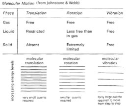
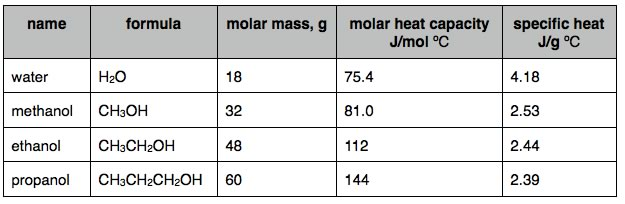

| Chapter 5.3: Energy associated vibrating, bending & rotating |
The average kinetic energy of a gas molecule
can be directly related to temperature by the equation EK(bar) =
1/2 mv(bar)2 = 3/2 kT where v(bar) is the average velocity and k
is a constant, known as the Boltzmann constant. So, you might reasonably
conclude that where the temperature is 0 K, all movement stops. BUT,
if a molecule stops moving we should be able to tell exactly where
it is, right? Oh no! that would violate the uncertainty principle.
At 0 K (a temperature that cannot be reached, even in theory) the
system will have what is called “zero point energy”,
a concept completely irrelevant to chemistry but which you should
ask your physics professors to explain. |
5.1 Systems |
For monoatomic compounds (the noble gases), temperature is a measure of the average kinetic energy of molecules. But for systems made up of more complex molecules, that is molecules composed of multiple atoms, there are other ways to store energy beside translation (moving through space). In these situations energy added to a system can, in addition to speeding up the movement of molecules, make them vibrate, bend and rotate (recall we discussed this briefly in chapter 4). These vibrations, bends, and rotations are distinct for each type of molecule - they depend upon molecular shape and composition. |

|
Perhaps not surprisingly, they are quantized, which means that only certain packets of energy can be absorbed or releases as different vibrations or rotations are engaged. Because of that, we can use these molecule-specific energy states to identify molecules and determine their structure at the atomic level. Just as we can identify atoms of elements by their electronic spectra (that is how their electrons absorb and emit photons as they move from one quantum level to another), we can identify molecules by the way they absorb or emit photons as the molecule moves from one vibrational (or rotational) state to another. Since it takes less energy to move between vibrational states, photons of infra-red or microwave frequency are typically involved in these analysis. This is the basis for infra-red spectroscopy (a topic that we will return to in the next (not yet written) section of CLUE. Since there are more ways for a complex molecule to vibrate, bend and rotate, it takes more energy to increase the temperature of more complex materials, since some of the added energy is used up in vibrations and rotations as well as translations. We can do experiments to determine how adding energy to a substance affects its temperature. The amount of energy required to raise the temperature of a particular amount of substance is determined by the molecular level structure of the material. While the word “heat” is sometimes used to describe thermal energy, in the world of physics the term heat is specifically used to describe the transfer of thermal energy from one thing to another, and so we will stick with thermal energy here. The units of thermal energy are joules (J). Thermal energy is the sum of the kinetic and various other energies associated with the particles. There are two commonly used measures of how much energy it takes to change the temperature of a substance (and conversely how much energy a substance can store at a given temperature): specific heat (capacity) (J/g ºC) and molar heat capacity (J/mol ºC). The specific heat of a substance tells you how much energy is required to raise the temperature of a mass (1g) of material by 1 ºC; the molar heat capacity tells you how much energy is required to raise the temperature of a given number of particles (1 mole) by 1 ºC. The specific heats and molar heat capacities of different substances can be quite different; they reflect both molecular structure and intermolecular interactions (for solids and liquids, but not gases). Usually, more complex substances have a higher molar heat capacity, since larger molecules have more possible ways to vibrate, bend and rotate. Heat capacity and molecular structure It takes 4.12 J to raise 1 gram of water 1 ºC (or 1 K). If you add energy to a pan of water - by heating it on a stove top (or putting a bowl of water in a microwave oven) energy is transferred to the molecules of the water. The addition of energy to the system results in the faster movement of molecules, which includes moving from place to place, rotating, bending, and vibrating. Each type of movement adds to the overall thermal energy of the material. The molecules in a gas very rarely interact with one another, those in a solid and liquid interact constantly. The increase in temperature as a function of added energy is relatively simple to calculate for a gas, it is much more complicated for liquids and solids - it depends upon their molecular structure and their intramolecular (within a molecule) and intermolecular (between molecules) interactions. |
Consider the molar heat capacities and specific heats of water, and the hydrocarbon alcohols (which contain an -OH group) methanol, ethanol, and propanol - as you can see, water has an unusually high specific heat, even though it is smaller than the other molecules. |
 |
While their specific heats are pretty much constant, their molar heat capacities increase with molar mass. So an obvious question is, why is the specific heat of water so much higher than that of these alcohols? The reasons for this anomaly appear to be that:
The relatively high specific heat of water has important ramifications for us, biologically. About 70% of the Earth’s surface is covered with (lots) of water. The changes in solar energy between day and night go largely into the oceans, and because of water’s high specific heat, this does not lead to dramatic changes in temperature. At night, much of the heat absorbed during the day is radiated away as infrared photons. In contrast, surface temperatures of water-less areas (like deserts), planets (like Mars) and the Moon, fluctuate much more dramatically. This moderation of day-night temperature change is likely to be one of the factors that made it possible for life to originate, survive, and evolve on the early Earth. As we go on, we will see other aspects of water’s behavior that are critical to life. What happens when we remove thermal energy from a gas? Now that we have been formally introduced to the concepts of heat, thermal energy and temperature, let us take a look at what happens when things change. We will begin with a gas, since it is the simplest form of matter. Let us first define our system, a sealed container of gas, in our case water vapor. We can reduce the temperature by cooling the walls of the container; as gas molecules collide with the walls, some of their energy will be transferred to the wall and then removed by the cooling system. Over time, the average kinetic energy of the molecules (temperature) will decrease. Now we know that all molecules are attracted to one another by van der Waals interactions. In the case of water molecules, there are also interactions mediated by the ability to make H-bonds and dipole dipole interactions. When the temperature is high enough, these relatively weak interactions are not strong enough to make molecules stick together - and are broken during molecular collisions. As the temperature drops, and the average kinetic energy decreases, more and more of these interactions persist for longer and longer times. This enable groups of molecules form larger and larger aggregates. These molecular ensembles will become large and heavy. Assuming that our container is on the surface of the Earth, they will “fall out” or condense out of the gaseous phase and form a liquid. Because the molecules in the liquid are interacting closely with one another (through van der Waals interactions), the volume these aggregates occupy is much smaller than the volume occupied by the same number of molecules in a gas. The density (mass/volume) of the liquid is higher. As the drops fall to the bottom of the container, they merge with one another and the liquid phase (below) separates from the gaseous phase. This temperature, where the liquid phase first appears, is the boiling (or condensation) point of the material (for water it is 100ºC under atmospheric pressure at sea level). If we continue to remove energy from the system at a fairly slow steady rate, the temperature will not change until almost all the water vapor has condensed. Why do you think this is so? It may be easier to think about the reverse process - when water boils the temperature of the water does not change until almost all the water in the liquid phase has vaporized, even though energy is being added to the system. What is that energy being used for? |
However, even at temperatures well below
the boiling point there will still be some molecules in the gaseous
phase. Why? because within the liquid, some molecules will be
moving fast enough (and are located close enough to the liquid-gas
boundary) to break the interactions holding them in the liquid.
When they leave the liquid phase, the average kinetic energy
of the liquid drops (the molecules that leave have higher than
average kinetic energy), and some of the leaving molecule’s
kinetic energy is used to break free of the interactions holding
molecules together in the liquid phase. The escaping molecules
now have lower kinetic energy - this is the basis of the process
known as “evaporative cooling”, and is how the evaporation
of sweat cools your body. |
5.1
Systems |
Question to answer:
Questions to ponder:
|
| 28-Jun-2012 |